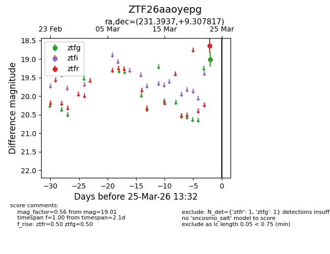
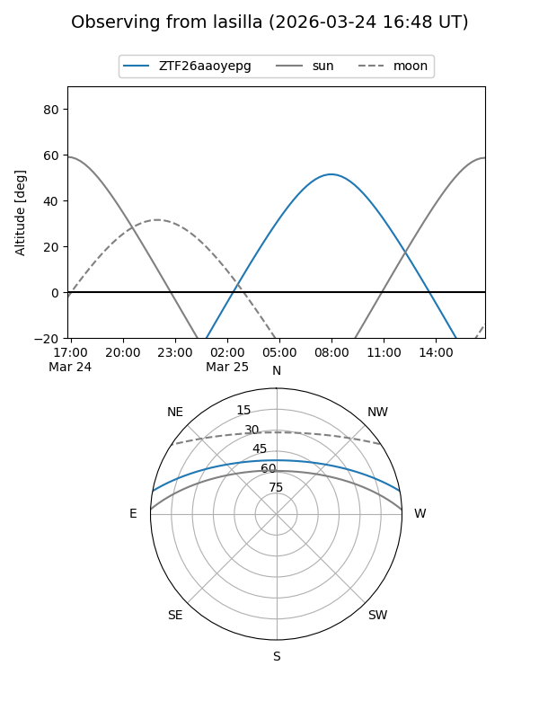
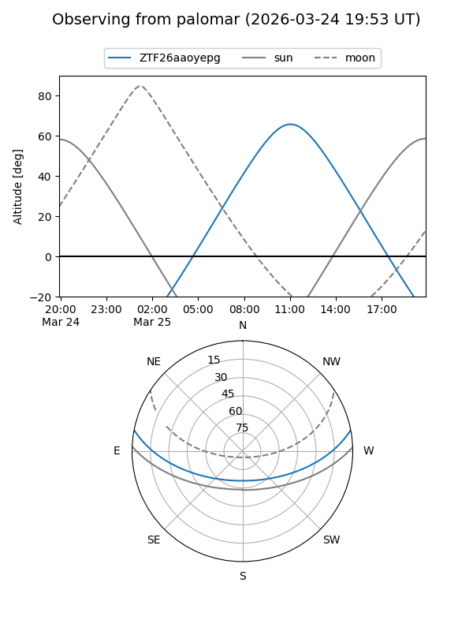

ZTF26aaoyepg
Target ZTF26aaoyepg at 2026-03-25 13:34
Aliases and brokers:
FINK: link
Lasair: link
ALeRCE: link
alt names
ZTF26aaoyepg (ztf,fink_ztf)
Coordinates:
equatorial (ra, dec) = 231.3937,+9.30782
equatorial (HMS+DMS) = 15:25:34.50,+09:18:28.14
galactic (l, b) = (14.2358,+49.53163)
Flags:
Photometry:
last ztfg=19.01, ztfr=18.63
1 ztfg, 1 ztfr detections
Lightcurve

Visibility


Additional plots